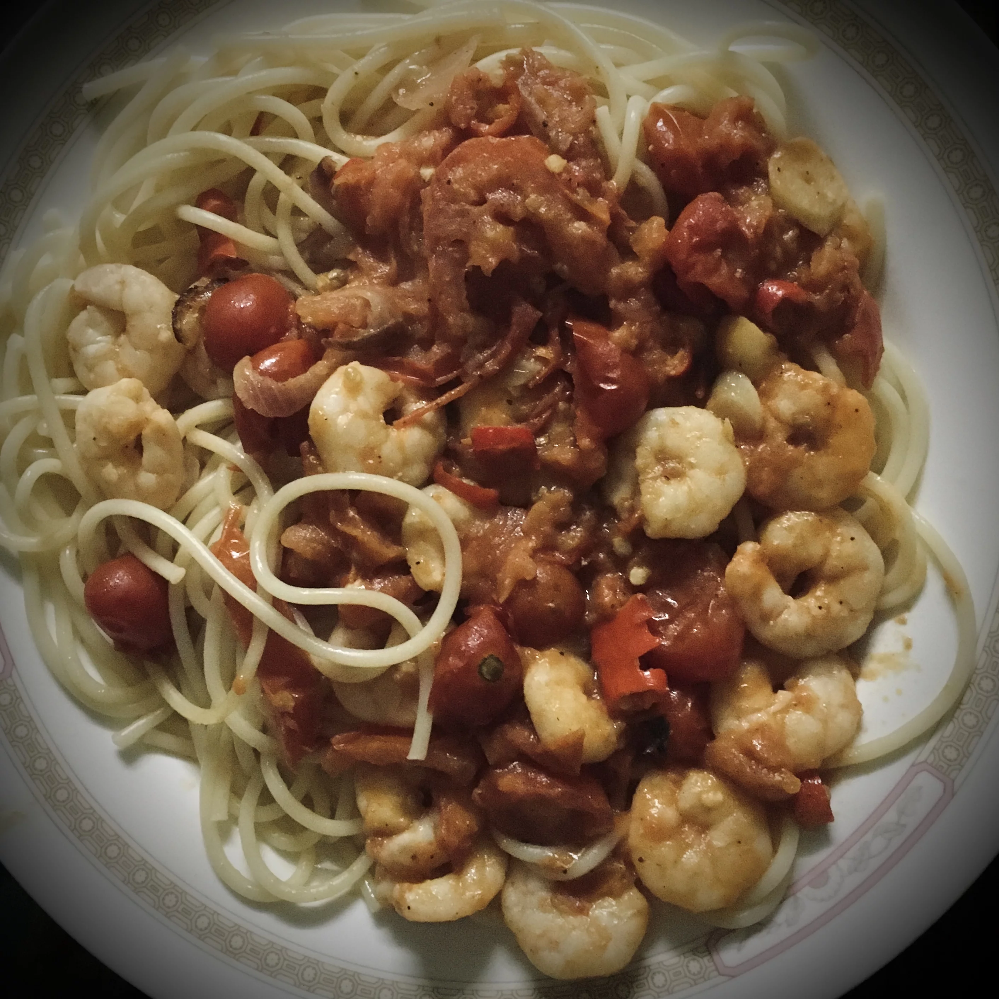

Pumpkin Quinoa Porridge
BBQ Hot Wings
Shrimp Spaghetti With Tomato Sauce

Description
A delicious spaghetti dish with large shrimp in a tomato sauce. Perfect dish to cook if you are having guests
Ingredients (4 portions)
- 10 large shrimps, deveined with shell and head left on
- 2 tomatoes, or more to taste
- ½ bunch flat-leaf parsley, divided
- 2 tablespoons extra-virgin olive oil
- ½ large onion, chopped
- ½ red bell pepper, chopped
- ½ fresh red chile pepper, finely chopped
- 2 large cloves garlic, sliced, or more to taste
- ¼ cup water
- 1 tablespoon tomatosauce
- ½ tablespoon dried oregano
- salt and ground black pepper to taste
- ½ teaspoon paprika
- .81 pounds spaghetti
Directions
Step 1
- Peel shrimp and place skin, heads, and tails into a large saucepan. Fill pan with water and bring to a boil. Reduce heat to low and let simmer, about 45 minutes.
Step 2
- Combine tomatoes and 1/2 the parsley in a blender; puree until smooth.
Step 3
- Heat olive oil in a separate pan over medium heat. Add onion, bell pepper, and chile pepper; cook and stir until softened, about 5 minutes. Add garlic; cook until fragrant but not browned, 1 to 2 minutes.
Step 4
- Pour pureed tomato mixture into the pan with the peppers. Add water, tomato paste, oregano, salt, and black pepper. Stir well; add paprika. Let sauce simmer on low to medium heat until juices have reduced.
Step 5
- Strain shrimp shells from the water. Bring water back to a boil and add spaghetti. Cook spaghetti, stirring occasionally, until tender yet firm to the bite, about 12 minutes. Reserve 1 cup of the cooking water and drain the rest.
Step 6
- In the meantime, add shrimp to the tomato sauce. Add the reserved water, stir well, and cook until shrimp is pink, about 3 minutes. Plate spaghetti and spoon the sauce on top; garnish with the remaining parsley.
Return to top